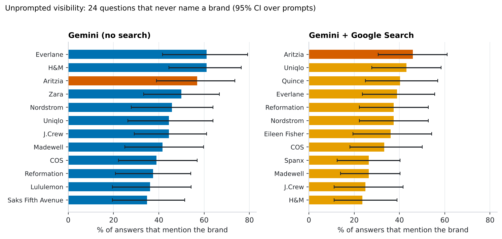
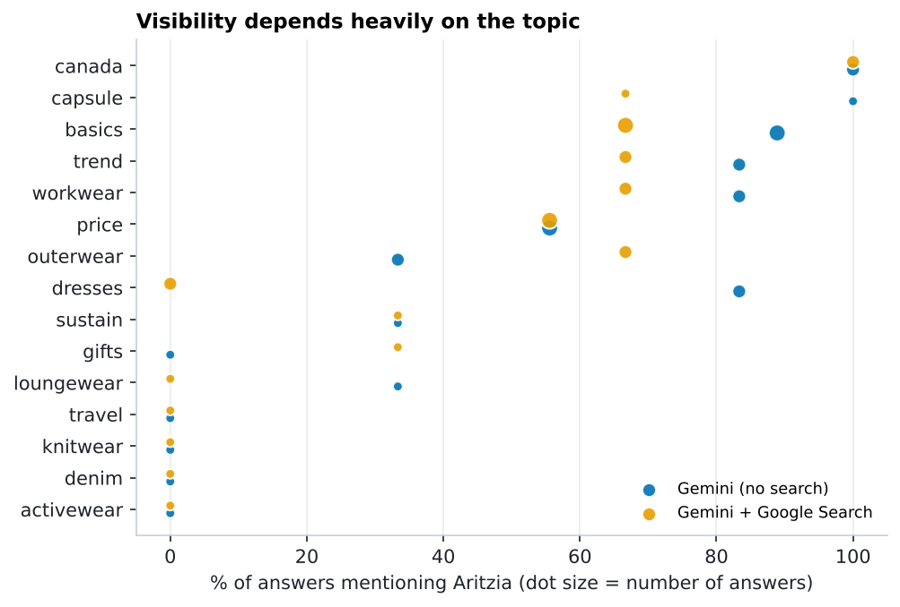
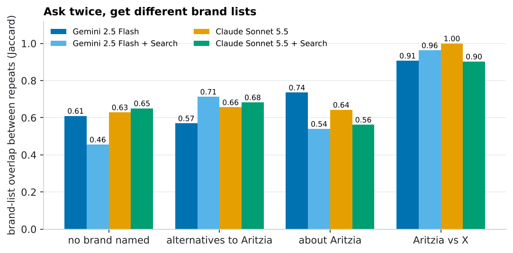
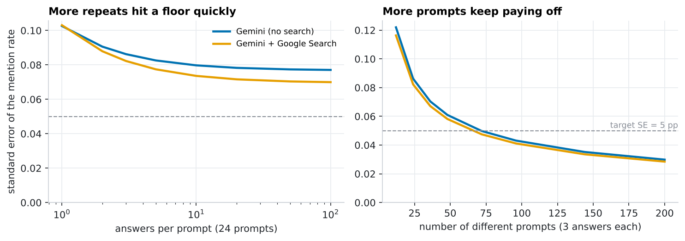
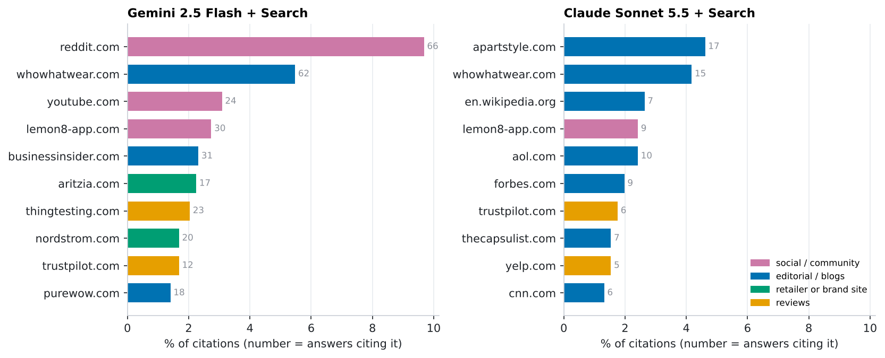

Does AI recommend Aritzia? Measuring brand visibility in AI answers
When a shopper asks an AI assistant where to buy a blazer, which brands does it name, in what order, and would it say the same thing twice? I asked 40 shopper questions 3 times each on two AI surfaces, extracted every brand mentioned, and measured visibility with proper confidence intervals and tests. Aritzia is the focus brand; 93 brands are tracked.
Independent study; not affiliated with Aritzia or any brand mentioned. Results describe what one model said on one day (2026-11-03), not the brands' products.
TL;DR. With no brand named, Gemini brings up Aritzia in about half of shopping answers (57% without search, 46% with Google Search) and ranks it #1 with search. But visibility depends heavily on the topic (canada, capsule, basics vs none in activewear, denim, knitwear), and with only 24 unbranded prompts I can't statistically separate Aritzia from competitors such as Everlane or Uniqlo. Search makes answers shorter (3.7 fewer brands per answer, p = 0.0003) but the change in Aritzia's mention rate (-11 pp, CI [-25 pp, +3 pp]) is inconclusive. Repeating a question changes the brand list a lot, so single-shot "AI visibility scores" can mislead.
1 · Study design
Every prompt is something a shopper might type. Only the unbranded prompts measure visibility, because a brand named in the question will naturally appear in the answer.
| Prompt type | Prompts | Example | Used for |
|---|---|---|---|
| Unbranded ("discovery") | 24 | "Where can I buy stylish women's workwear that isn't boring?" | Visibility, share of voice, rank |
| Alternatives | 6 | "What are good alternatives to Aritzia?" | Which competitors are named |
| Head-to-head | 6 | "Aritzia vs Reformation: which is better for dresses?" | Positioning, sentiment |
| About the brand | 4 | "Is Aritzia worth the price?" | Sentiment |
Two AI surfaces built on the same model (gemini-2.5-flash): plain, answering from the model's own knowledge, and with Google Search grounding, which looks up web pages and cites them (closer to what shoppers see in AI answers with sources). Each prompt was asked 3 times at temperature 1.0 on each surface: 240 answers, about 488k tokens. Brands were extracted two independent ways (exact-name dictionary and an LLM reader) and audited against each other (section 7).
Statistics note: answers to the same prompt are far more alike than answers to different prompts, so every interval resamples prompts, not answers. Treating all 240 answers as independent would make the intervals look too tight.
2 · How visible is Aritzia?

Gemini (no search)
| # | Brand | Mentioned in | 95% CI | Share of voice | Avg. position when mentioned |
|---|---|---|---|---|---|
| 1 | Everlane | 61% | [42%, 79%] | 4.3% | 6.2 |
| 2 | H&M | 61% | [44%, 76%] | 4.3% | 8.4 |
| 3 | Aritzia | 57% | [39%, 74%] | 4.0% | 5.9 |
| 4 | Zara | 50% | [33%, 67%] | 3.5% | 9.5 |
| 5 | Nordstrom | 46% | [28%, 64%] | 3.2% | 8.0 |
| 6 | Uniqlo | 44% | [26%, 64%] | 3.1% | 7.8 |
| 7 | J.Crew | 44% | [29%, 61%] | 3.1% | 7.5 |
| 8 | Madewell | 42% | [25%, 60%] | 2.9% | 5.8 |
| 9 | COS | 39% | [22%, 57%] | 2.7% | 6.2 |
| 10 | Reformation | 38% | [21%, 54%] | 2.6% | 8.1 |
Gemini + Google Search
| # | Brand | Mentioned in | 95% CI | Share of voice | Avg. position when mentioned |
|---|---|---|---|---|---|
| 1 | Aritzia | 46% | [31%, 61%] | 4.4% | 5.6 |
| 2 | Uniqlo | 43% | [28%, 58%] | 4.1% | 6.5 |
| 3 | Quince | 40% | [25%, 57%] | 3.9% | 5.3 |
| 4 | Everlane | 39% | [24%, 56%] | 3.7% | 5.1 |
| 5 | Reformation | 38% | [22%, 53%] | 3.6% | 7.4 |
| 6 | Nordstrom | 38% | [22%, 53%] | 3.6% | 7.0 |
| 7 | Eileen Fisher | 36% | [19%, 54%] | 3.5% | 6.2 |
| 8 | COS | 33% | [18%, 50%] | 3.2% | 6.2 |
| 9 | Spanx | 26% | [12%, 40%] | 2.5% | 7.9 |
| 10 | Madewell | 26% | [14%, 40%] | 2.5% | 7.2 |
Aritzia is the 3rd most-mentioned brand without search and the 1st with search. Is it significantly ahead of anyone? No. Comparing Aritzia with each top competitor on the same prompts (paired by prompt, Holm-corrected for multiple comparisons), the smallest adjusted p-value is 0.93 without search and 0.82 with search:
| Surface | Competitor | Aritzia minus competitor | 95% CI | p (Holm-adjusted) |
|---|---|---|---|---|
| Gemini (no search) | Everlane | -4 pp | [-26 pp, +18 pp] | 1.00 |
| Gemini (no search) | H&M | -4 pp | [-22 pp, +15 pp] | 1.00 |
| Gemini (no search) | Zara | +7 pp | [-13 pp, +28 pp] | 1.00 |
| Gemini (no search) | Nordstrom | +11 pp | [-15 pp, +38 pp] | 1.00 |
| Gemini (no search) | Uniqlo | +12 pp | [-7 pp, +33 pp] | 1.00 |
| Gemini (no search) | J.Crew | +12 pp | [-7 pp, +32 pp] | 1.00 |
| Gemini + Google Search | Uniqlo | +3 pp | [-18 pp, +25 pp] | 1.00 |
| Gemini + Google Search | Quince | +6 pp | [-15 pp, +28 pp] | 1.00 |
| Gemini + Google Search | Everlane | +7 pp | [-12 pp, +28 pp] | 1.00 |
| Gemini + Google Search | Reformation | +8 pp | [-11 pp, +28 pp] | 1.00 |
| Gemini + Google Search | Nordstrom | +8 pp | [-12 pp, +31 pp] | 1.00 |
| Gemini + Google Search | Eileen Fisher | +10 pp | [-12 pp, +32 pp] | 1.00 |
Share of voice = a brand's mentions divided by all tracked-brand mentions. Rank = order of first mention within the answer (1 = first brand named). "Mentioned in" counts an answer once however often the brand appears.
It depends on the topic

Aritzia shows up almost every time for Canada-related, capsule-wardrobe, basics, trend and workwear questions, and never for activewear, denim, knitwear, travel. For a brand team the actionable view is the gaps by topic, not the single average.
3 · Does adding search change the answer?
Compared prompt by prompt (the same 24 unbranded questions on both surfaces):
| Metric | Gemini (no search) | Gemini + Google Search | Difference (search − plain) | 95% CI over prompts | p (sign-flip test) |
|---|---|---|---|---|---|
| Aritzia mention rate | 57% | 46% | -11 pp | [-25 pp, +3 pp] | 0.21 |
| Tracked brands named per answer | 14.2 | 10.5 | -3.7 | [-5.4, -2.0] | 0.0003 |
Search makes answers more selective: -3.7 brands per answer on average, a clear effect (the confidence interval excludes zero). Its effect on Aritzia's mention rate is inconclusive: the estimate is -11 pp, but with 24 prompts this comparison can only reliably detect differences of about 21% (80% power), so a real effect of 10 points would very often be missed. That is a power-analysis result about my design, not evidence of "no effect".
4 · Would the AI say the same thing twice?
| Prompt type | Gemini (no search) | Gemini + Google Search |
|---|---|---|
| No brand named | 0.60 | 0.48 |
| Alternatives to Aritzia | 0.58 | 0.60 |
| About Aritzia | 0.68 | 0.88 |
| Aritzia vs competitor | 0.87 | 0.96 |

For unbranded questions, two answers to the same prompt share only about 60% of their brands without search and 48% with search. In the plain surface, 9 of 24 prompts always mention Aritzia, 7 never do, and 8 do so only sometimes (with search: 7 / 7 / 10). A single run of a prompt is therefore a noisy measurement.
How many repeats and prompts do you need?
I split the variance in "did the answer mention Aritzia?" into a part that differs between prompts and a part that differs between repeats of the same prompt (intra-class correlation, ICC): 0.56 without search, 0.46 with search. Prompt-to-prompt differences set a floor that repeating cannot remove:

Design rule: to estimate a mention rate to ±5 percentage points (one SE) you need about 72 prompts with 3 repeats each (59 even with 30 repeats). This is the same power logic as an A/B test, applied to prompt design, and it is why the intervals above are as wide as they are.
5 · What do the answers say about Aritzia?
Sentiment and "recommended" flags come from the LLM reader judging how the answer portrays the brand (not my opinion of the brand):
| Prompt type | Surface | Answers mentioning Aritzia | Positive / neutral / mixed / negative | Recommended |
|---|---|---|---|---|
| No brand named | Gemini (no search) | 41 | 41 / 0 / 0 / 0 | 98% |
| No brand named | Gemini + Google Search | 33 | 31 / 2 / 0 / 0 | 82% |
| Alternatives to Aritzia | Gemini (no search) | 18 | 9 / 9 / 0 / 0 | 0% |
| Alternatives to Aritzia | Gemini + Google Search | 17 | 2 / 15 / 0 / 0 | 0% |
| Aritzia vs competitor | Gemini (no search) | 18 | 11 / 0 / 7 / 0 | 78% |
| Aritzia vs competitor | Gemini + Google Search | 18 | 6 / 0 / 12 / 0 | 56% |
| About Aritzia | Gemini (no search) | 12 | 0 / 0 / 12 / 0 | 25% |
| About Aritzia | Gemini + Google Search | 12 | 0 / 0 / 12 / 0 | 17% |
When Aritzia appears in an unbranded answer it is almost always portrayed positively and recommended (98% without search, 82% with search). Asked directly whether it is worth the price, both surfaces give a mixed verdict every time (12 of 12 and 12 of 12 answers) and recommend it less (25% / 17%). Selection bias matters here: discovery answers list only brands the AI chooses to recommend, so they are positive almost by construction.
6 · Where does the search-grounded answer get its information?

| Domain | Share of citations | Answers citing it | Type |
|---|---|---|---|
| reddit.com | 10.0% | 65 | social / community |
| whowhatwear.com | 5.7% | 66 | editorial / blogs |
| youtube.com | 3.4% | 29 | social / community |
| nordstrom.com | 2.7% | 29 | retailer or brand site |
| aritzia.com | 2.2% | 19 | retailer or brand site |
| lemon8-app.com | 2.1% | 20 | social / community |
| businessinsider.com | 2.0% | 29 | editorial / blogs |
| thingtesting.com | 1.9% | 20 | reviews |
| narcity.com | 1.3% | 17 | editorial / blogs |
| trustpilot.com | 1.3% | 10 | reviews |
- Community and editorial content dominates. Reddit alone is cited in 65 of 120 answers (54%); social/community sites are 16% of all citations and editorial/blogs 66%.
- The brand's own site is a small share: Aritzia's website accounts for 2.2% of citations (19 answers). What other people write about a brand matters at least as much as what the brand publishes.
- Domain types are a rough automatic labelling (retailer/brand sites are matched against the brand list; everything else non-social, non-review is "editorial / blogs").
7 · Auditing the measurement itself
Both extractors agree on 99.3% of all answer × brand cells (Cohen's κ = 0.96), and they give the same Aritzia mention rate on unbranded prompts (56.9% and 45.8% by dictionary, 56.9% and 45.8% by LLM). I read the disagreements in context: the dictionary-only hits are mostly ownership mentions ("part of the H&M group", "Gap Inc.", "an Amazon-owned retailer") and a few false positives such as the verb "Target"; the LLM never found a tracked brand that the dictionary missed. The dictionary is the primary measure; the LLM reader is the robustness check and the source of sentiment.
The LLM also reports brands outside my list: 41% of its brand mentions are to untracked brands (Poshmark, Lulus, Boden and others), so share of voice here means share among the 93 tracked brands. After the first collection I added the 24 most frequent untracked names to the dictionary.
Limitations
- One model family, one day. Both surfaces are Gemini 2.5 Flash. ChatGPT, Perplexity, Claude and Google's AI Overviews may differ, and answers drift over time. This is a snapshot, not a trend.
- API is not the consumer product. The apps add system prompts, personalization and location that an API call does not.
- The prompt set is my design. Several prompts relate to Canada and everyday basics, where Aritzia naturally fits, so the absolute mention rate depends on the prompt mix; relative comparisons across surfaces and brands are more reliable than the level.
- Small samples per topic and per competitor comparison (24 unbranded prompts): conclusions are about patterns and design, not precise market-share numbers.
- What an AI says is not what is true. Sentiment is how the answer portrays a brand, judged by another model.
Reproduce and extend
pip install -e ".[dev]"
export GEMINI_API_KEY=... # not needed if a proxy injects the credential
python -m brandvis.collect --batch 2026-11-03 # 240 answers, ~12 min
python -m brandvis.extract --raw data/raw/2026-11-03.jsonl --out data/processed/2026-11-03.jsonl
python analysis/analyze.py && python analysis/build_site.py
pytest # 29 testsNext steps: add more AI surfaces (the provider interface is one small class), repeat weekly to track drift, and grow the prompt set to ~70 for tighter intervals.